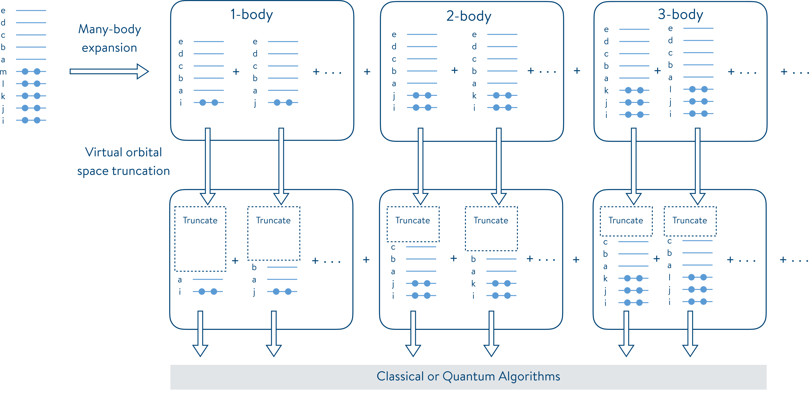

# Installation of tangelo if not already installed.
try:
import tangelo
except ModuleNotFoundError:
!pip install pyscf
!pip install git+https://github.com/goodchemistryco/Tangelo.git@develop --quiet
# Download the data folder at https://github.com/goodchemistryco/Tangelo/branches/develop/tangelo/problem_decomposition/tests/incremental/data/BeH2_CCPVDZ_MIFNO_HBCI
import os
data_folder = "BeH2_CCPVDZ_MIFNO_HBCI"
if not os.path.isdir(data_folder):
!curl https://codeload.github.com/goodchemistryco/Tangelo/tar.gz/develop | \
tar -xz --strip=6 Tangelo-develop/tangelo/problem_decomposition/tests/incremental/data/{data_folder}Exploring the Method of Increments with QEMIST Cloud and Tangelo
In this notebook, we illustrate how users can leverage QEMIST Cloud and Tangelo to explore the impact of quantum computing on problems tackled with the method of increments (MI) problem decomposition technique. We demonstrate workflows using the Frozen Natural Orbital Based Method of Increments (MI-FNO), as well as the incremental Full Configuration Interaction (iFCI) approach.
You do not need to have the qemist-client python package installed to run this notebook: only tangelo is required. For more information about QEMIST Cloud (installation, features, issues, qemist_client API…), please refer to the QEMIST Cloud documentation or contact the development team.
The first section provides a high-level description of the MI approach. The second one briefly shows how QEMIST Cloud can apply this approach to a usecase, and provide reference results computed with high-accuracy classical solvers. We then focus on the API provided in Tangelo allowing users to combine the MI performed by QEMIST Cloud and any quantum workflow written with Tangelo.
The cell below installs the required dependencies for this notebook in case Tangelo is not found in your current environment.
Use case
Our use case here is the beryllium hydride (BeH\(_2\)) system defined below, using the cc-pvdz basis, chosen for simplicity.
xyz = """
Be 0.0000000 0.0000000 0.0000000
H 0.0000000 0.0000000 1.3300000
H 0.0000000 0.0000000 -1.3300000
"""
basis = "cc-pvdz"
charge = 0
spin = 0What are iFCI and MI-FNO ?
The method of increments (MI) expresses the electron correlation energy of a molecular system as a truncated many-body expansion in terms of orbitals, atoms, molecules, or fragments. The electron correlation energy of the system is expanded in terms of occupied orbitals, and MI is employed to systematically reduce the occupied orbital space. Simultaneously, the virtual orbital space of each increment is reduced by spanning it by a truncated set of natural orbitals obtained from diagonalization of a one-particle density matrix. Following this approach, the methods referred to as iFCI and MI-FNO are available for the systematic reduction of both the occupied space and the virtual space in quantum chemistry simulations. Although the two methods share similarities, they exhibit a few key differences, including the approach used to truncate the virtual orbital space (Frozen Natural Orbitals (FNOs) vs Summation Natural Orbitals (SNOs)) and the inclusion of a correction factor for each MI-FNO fragment (which is not required for iFCI fragments).
MI was first introduced in quantum chemistry by Nesbet (Phys. Rev. 1967, 155, 51, Phys. Rev. 1967, 155, 56 and Phys. Rev. 1968, 175, 2) and is based upon the n-body Bethe–Goldstone expansion (Proc. R. Soc. A, 1957, 238, 551) of the correlation energy of a molecule. The correlation energy (\(E_c\)), defined as the difference between the exact (\(E_{\text{exact}}\)) and the Hartree–Fock (mean-field) energy (\(E_{\text{HF}}\)), can be expanded as
\[ \begin{align*} E_c &= E_{\text{exact}} - E_{\text{HF}} \\ &= \sum_i \epsilon_i + \sum_{i>j} \epsilon_{ij} + \sum_{i>j>k} \epsilon_{ijk} + \sum_{i>j>k>l} \epsilon_{ijkl} + \dots \end{align*} \]
where \(\epsilon_i\), \(\epsilon_{ij}\), \(\epsilon_{ijk}\), and \(\epsilon_{ijkl}\) are, respectively, the one-, two-, three-, and four-body increments (expansions) defined as
\[ \begin{align*} \epsilon_i &= E_c(i) \\ \epsilon_{ij} &= E_c(ij) - \epsilon_i - \epsilon_j \\ \epsilon_{ijk} &= E_c(ijk) - \epsilon_{ij} - \epsilon_{ik} - \epsilon_{jk} - \epsilon_{i} - \epsilon_{j} - \epsilon_{k} \\ \epsilon_{ijkl} &= E_c(ijkl) - \epsilon_{ijk} - \epsilon_{ijl} - \epsilon_{jkl} - \dots \\ &\vdots \end{align*} \]
The following figure, taken from J. Chem. Phys. 2021, 155, 034110, illustrates this problem decomposition scheme in terms of 1-body and many-body interactions. On each subproblem, a truncation is applied to reduce their virtual space. The subproblems resulting from the iFCI and MI-FNO reduction can then be solved by any algorithm, including quantum algorithms such as the phase estimation algorithm and the variational quantum eigensolver (VQE), to approximate the correlation energies of a molecular system.

The iFCI and MI-FNO problem decomposition pipelines are available in QEMIST Cloud. In this notebook, we illustrate how to export MI fragment data computed in QEMIST Cloud, and import it in Tangelo for further treatment, such as using quantum solvers.
Performing MI calculations with QEMIST Cloud
QEMIST Cloud is an engine that enables faster, more accurate, and scalable ways to perform computational chemistry simulations. This platform leverages easily and readily accessible computers on the cloud to perform chemistry simulations that were previously intractable even on expensive, high-performance computing environments.
In order to leverage this platform to perform the MI calculations, subscribing to the services and installing the qemist_client python package is necessary. This notebook does not require either of these things: we provide the code snippet used to generate the problem decomposition results, and use those as pre-computed values for the rest of the notebook.
For more information about QEMIST Cloud (installation, features, issues, qemist_client API…), please refer to the QEMIST Cloud documentation or contact the development team.
In the script below, each fragment’s virtual space is truncated to keep only the virtual orbitals with the highest occupation number. MI is paired with the Heath-Bath Configuration Interaction (HBCI) classical solver. Opting for FNO involves employing the MI-FNO workflow, whereas choosing SNO involves the iFCI selection.
# Save your authentication token and project ID as environment variables.
import os
os.environ["QEMIST_AUTH_TOKEN"] = "your_auth_token"
os.environ["QEMIST_PROJECT_ID"] = "your_project_id"
from qemist_client.molecule import Molecule
from qemist_client.electronic_structure_solvers import HBCI
from qemist_client.problem_reduction import FNO, SNO
from qemist_client.problem_decomposition import IncrementalDecomposition
# The geometry is defined using atomic xyz coordinates.
xyz = """
Be 0.0000000 0.0000000 0.0000000
H 0.0000000 0.0000000 1.3300000
H 0.0000000 0.0000000 -1.3300000
"""
# Create the molecule object.
basis = "cc-pvdz"
charge = 0
spin = 0
molecule = Molecule(xyz, basis=basis, charge=charge, spin=spin)
# Define the base solver - this will be used to get the fragment energies.
hbci_solver = HBCI()
# The export_fragment_data=True flag turns on the exportation of the FNO
# molecular coefficients to an Amazon S3 bucket. Comment out the next line
# and uncomment the line after next to perform iFCI instead of MI-FNO.
fno = FNO(hbci_solver, export_fragment_data=True)
#sno = SNO(hbci_solver, export_fragment_data=True)
# Create a problem decomposition object. Uncomment the appropriate line
# for MI-FNO / iFCI.
mi_solver = IncrementalDecomposition(electronic_structure_solver=fno, truncation_order=2)
#mi_solver = IncrementalDecomposition(electronic_structure_solver=sno, truncation_order=2)
# Submit the problem to the cloud.
mi_handle = mi_solver.simulate(system=molecule)Using the problem handle, you can download the log file containing all the necessary information for further processing in Tangelo or for archiving purposes. This action is performed in the subsequent cell using the following code.
import urllib.request
import json
from qemist_client.util import get_problems_url
# Downloading the log file.
url = get_problems_url(mi_handle)
urllib.request.urlretrieve(url[mi_handle]["full_result"], f"full_results_{mi_handle}.log")
# Reading the log file.
with open(f"full_results_{mi_handle}.log", "r") as json_file:
mi_full_result = json.loads("\n".join(json_file.readlines()[1:]))
# Storing the fragment ids and handles.
fragment_handles = dict()
for n_body_results in mi_full_result["subproblem_data"].values():
for fragment_id, fragment_result in n_body_results.items():
fragment_handles[fragment_id] = fragment_result["problem_handle"]
fragment_urls = get_problems_url(list(fragment_handles.values()))
for fragment_handle, fragment_url in fragment_urls.items():
mo_coeff_url = fragment_url.get("mo_coefficients", None)
if mo_coeff_url is not None:
urllib.request.urlretrieve(mo_coeff_url, f"mo_coefficients_{fragment_handle}.h5")Combining quantum algorithms with MI using Tangelo
In the future, pairing problem decomposition techniques such as MI with quantum solvers running in the cloud could be streamlined in QEMIST Cloud, which could directly call the solvers available in Tangelo.
But we think quantum hardware and quantum algorithm development has a bit of a way to go before this can be seen as a practical approach. However, we can manually explore how to combine MI with quantum solvers right now, in order to explore use cases intractable otherwise: maybe our discoveries can contribute in advancing the field, and bring that future a bit sooner.
This section illustrates how Tangelo can retrieve the results from a MI-FNO job run in QEMIST Cloud, and enable our quantum explorations.
1. Importing results from QEMIST Cloud
In Tangelo, the MethodOfIncrementsHelper class facilitates importing the results generated by QEMIST Cloud.
from tangelo.problem_decomposition import MethodOfIncrementsHelperMethodOfIncrementsHelper can either directly take a “results” object in json format produced by QEMIST Cloud (using full_result=...), or the path to a file containing that object (using log_file=...). In our example, let’s just assume the full results has been saved in a folder called BeH2_CCPVDZ_MIFNO_HBCI and let’s see what information has been retrieved.
for file in os.listdir(data_folder):
if file.endswith(".log"):
log_file_name = os.path.join(data_folder, file)
fno_fragments = MethodOfIncrementsHelper(log_file=log_file_name)
print(fno_fragments)(All the energy values are in hartree)
Total incremental energy = -15.83647358459995
Correlation energy = -0.06915435696141081
Mean-field energy = -15.76731922763854
energy_total energy_correlation epsilon correction n_electrons \
(0,) -15.767649 -0.000329 -0.000329 -0.000329 2
(1,) -15.782341 -0.015022 -0.015022 -0.000553 2
(2,) -15.784406 -0.017087 -0.017087 -0.000844 2
(0, 1) -15.782980 -0.015661 -0.000309 -0.000850 4
(0, 2) -15.785090 -0.017771 -0.000354 -0.001301 4
(1, 2) -15.835480 -0.068161 -0.036052 -0.000222 4
n_spinorbitals
(0,) 2
(1,) 26
(2,) 18
(0, 1) 28
(0, 2) 20
(1, 2) 38 It parsed information contained in the “result blob” from QEMIST Cloud. We see that there is information about the whole system, including the mean-field energy and the total energy, as well as how each of the fragment -denoted by a tuple of integers- contributed to the correlation energy. Here are the label breakdown: - energy_total: Total energy of the fragment, with the correction term. - energy_correlation: Total energy minus the mean-field energy. - epsilon: Contribution to the MI summation. - correction: MP2 correction, coming from the truncation of the virtual space in MI-FNO. - n_electrons: Number of active electrons in the fragment. - n_spinorbitals: Number of active spinorbitals in the fragment.
The number of electrons and spinorbitals can provide users with insights into the problem size, thereby offering an order of magnitude estimate for the required quantum resources for the subproblem. Although not displayed here, the object also contains information about the frozen orbitals used for each of these fragments (“frozen lists”).
2. Importing molecular coefficients files
In order to build a FermionOperator or QubitOperator object compatible with our quantum algorithms, we can retrieve the MO coeffs exported by QEMIST Cloud. The “result blob” contains a problem handle for each fragment: the retrieve_mo_coeff method fetches them in the target directory provided by the user, and then loads the MO coeffs into the MethodOfIncrementsHelper object.
- The default target folder is the folder where the user script is executed.
- If the user does not provide a path to a valid existing directory, the call returns an error.
fno_fragments.retrieve_mo_coeff(data_folder)3. Reconstructing a fragment Hamiltonian
We can use the MO coeffs to modify the molecular integrals, in order to take into account the FNO localization, using our “frozen lists”.
The compute_fermionoperator method handles the frozen orbitals for each fragment, and produces a FermionOperator. We are free to use the qubit mapping of our choice to produce a QubitOperator object, as input for a quantum algorithm.
from tangelo import SecondQuantizedMolecule
from tangelo.toolboxes.operators import count_qubits
from tangelo.toolboxes.qubit_mappings import combinatorial
# Needed to compute the molecular integrals.
mol = SecondQuantizedMolecule(xyz, q=charge, spin=spin, basis=basis)
# Selection of a fragment and fetching the number of electrons and spinorbitals.
selected_fragment = "(2,)"
n_electrons, n_spinorbitals = fno_fragments.n_electrons_spinorbs(selected_fragment)
# Computing the related FermionOperator.
ferm_op = fno_fragments.compute_fermionoperator(mol, selected_fragment)
# Transformation of the FermionOperator to a QubitOperator.
qu_op = combinatorial(ferm_op, n_spinorbitals//2, n_electrons)
print(f"Fragment {selected_fragment} mapped to {count_qubits(qu_op)} qubits.")Fragment (2,) mapped to 7 qubits.4. Do your thing !
Now that we are able to construct FermionOperator and QubitOperator objects representing the subproblems defined by our fragments, we are free to throw them at any algorithm available in Tangelo. You could even decide to use your own custom workflow instead. Each fragment that is relevant to you could be solved with a different quantum solver, if you wish to do so.
from tangelo.algorithms.variational import VQESolver
from tangelo.toolboxes.ansatz_generator import HEA
# Definition of the HEA ansatz.
hea_ansatz = HEA(n_qubits=count_qubits(qu_op), reference_state="zero", rot_type="real")
hea_circ = hea_ansatz.build_circuit()
# Performing VQE with the combinatorial Hamiltonian, with the HEA circuit.
vqe = VQESolver({
"qubit_hamiltonian": qu_op,
"ansatz": hea_circ,
"initial_var_params": "zeros",
"verbose": True
})
vqe.build()
vqe.simulate() Energy = -15.7673193
Energy = -15.7673193
Energy = -15.7673192
Energy = -15.7673193
Energy = -15.7673187
Energy = -15.7673192
Energy = -15.7673193
Energy = -15.7673194
Energy = -15.7673193
Energy = -15.7673193
Energy = -15.7673193
Energy = -15.7673193
Energy = -15.7673193
Energy = -15.7673193
Energy = -15.7673194
Energy = -15.7673193
Energy = -15.7673193
Energy = -15.7673193
Energy = -15.7673193
Energy = -15.7673192
Energy = -15.7673193
Energy = -15.7673194
Energy = -15.7692878
Energy = -15.7692878
Energy = -15.7692878
Energy = -15.7692878
Energy = -15.7692878
Energy = -15.7692879
Energy = -15.7692878
Energy = -15.7692877
Energy = -15.7692878
Energy = -15.7692878
Energy = -15.7692878
Energy = -15.7692878
Energy = -15.7692878
Energy = -15.7692878
Energy = -15.7692877
Energy = -15.7692878
Energy = -15.7692879
Energy = -15.7692879
Energy = -15.7692878
Energy = -15.7692879
Energy = -15.7692878
Energy = -15.7692877
Energy = -15.7692604
Energy = -15.7693902
Energy = -15.7693902
Energy = -15.7693902
Energy = -15.7693902
Energy = -15.7693902
Energy = -15.7693903
Energy = -15.7693902
Energy = -15.7693902
Energy = -15.7693902
Energy = -15.7693902
Energy = -15.7693902
Energy = -15.7693902
Energy = -15.7693902
Energy = -15.7693902
Energy = -15.7693902
Energy = -15.7693902
Energy = -15.7693902
Energy = -15.7693902
Energy = -15.7693902
Energy = -15.7693903
Energy = -15.7693902
Energy = -15.7693902
Energy = -15.7693934
Optimization terminated successfully (Exit mode 0)
Current function value: -15.76939343596418
Iterations: 3
Function evaluations: 68
Gradient evaluations: 3
VQESolver optimization results:
Optimal VQE energy: -15.76939343596418
Optimal VQE variational parameters: [-4.65361039e-06 -7.48958949e-03 6.06576452e-06 -6.43424550e-02
-4.07542333e-03 4.68779644e-07 3.94845833e-03 -4.16492769e-06
-4.73927195e-04 -2.38840376e-05 -6.47433768e-08 -1.79349747e-05
4.37744496e-07 3.94845796e-03 -2.76788008e-06 1.25258084e-03
8.31139807e-04 -1.22136176e-04 -5.01284676e-03 -6.25474891e-06
3.94845796e-03]
Number of Iterations : 3
Number of Function Evaluations : 68
Number of Gradient Evaluations : 3-15.769393435964185. Recomputing the total energy of the system
In order to assess the impact of quantum workflows applied to one or several fragments on the total energy of the system, the helper class provides a mi_summation method. This class recomputes the total energy of the system, using the reference values obtained classically by QEMIST Cloud, or instead using the values obtained by your quantum workflows for the fragments you specify. This summation was described by the formulas in the first section of this notebook.
If no argument is passed to mi_summation, then only reference values are used in the summation, which should then be in agreement (up to machine precision) with fno_fragments.e_tot, originally read from the QEMIST Cloud result blob. Otherwise, passing a dictionary using fragment labels as keys and the energy as the corresponding values does the trick. For MI-FNO fragments, the MP2 correction is automatically added, and a new total energy is computed. The difference between this new total energy and the reference total energy gives you a measure of the accuracy and the impact of combining quantum workflows with classical calculations performed with MI.
e = fno_fragments.mi_summation({"(1,)": vqe.optimal_energy})
print(f"Reconstructed energy: {e}\nMIFNO QEMIST Cloud energy: {fno_fragments.e_tot}\nDifference: {abs(e-fno_fragments.e_tot)}")Reconstructed energy: -15.848867932624449
MIFNO QEMIST Cloud energy: -15.83647358459995
Difference: 0.01239434802449857Closing words
This feature allows us to bring together the state-of-the-art MI problem decomposition schemes available at scale in QEMIST cloud, and quantum workflows written with Tangelo. It facilitates exploring larger, more industrially-relevant use cases with a combination of classical and quantum workflows of your choice, on subproblems that are more ammenable to current devices.
Both iFCI and MI-FNO implement the method of increments. They differ in how they truncate the virtual orbital space (SNO vs FNO) and the inclusion of a correction factor for MI-FNO fragments (which is not required for iFCI fragments).
For now, this exploration is manual, as we believe the current state of the field does not benefit from a fully automated and streamlined platform… yet! In the future, platforms such as QEMIST Cloud will be able to directly use Tangelo to run entire workflows on cloud infrastructure, using both quantum and classical devices.
Maybe your discoveries can contribute to advancing the field, and bring that future a bit sooner.
What will you do with Tangelo?